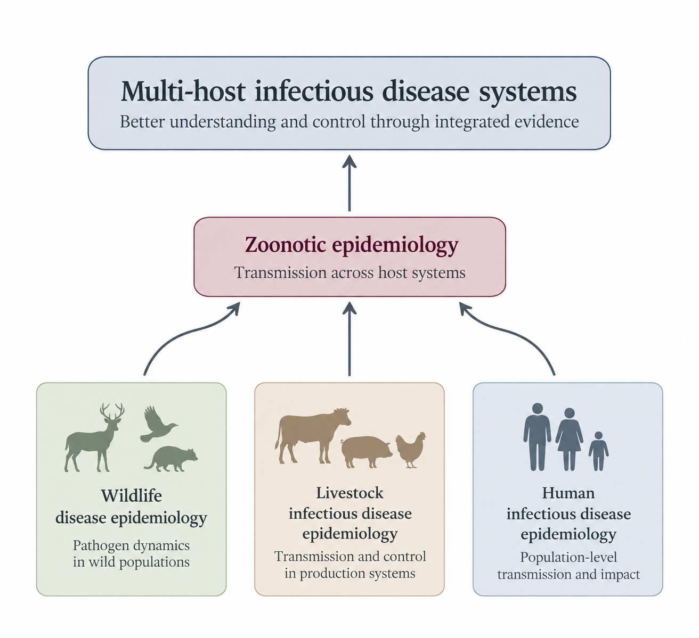

Research
Quantitative infectious disease epidemiology across wildlife, livestock, and human systems, with a focus on transmission and surveillance at their interfaces.

Quantitative infectious disease epidemiology across wildlife, livestock, and human systems, with a focus on transmission and surveillance at their interfaces.
